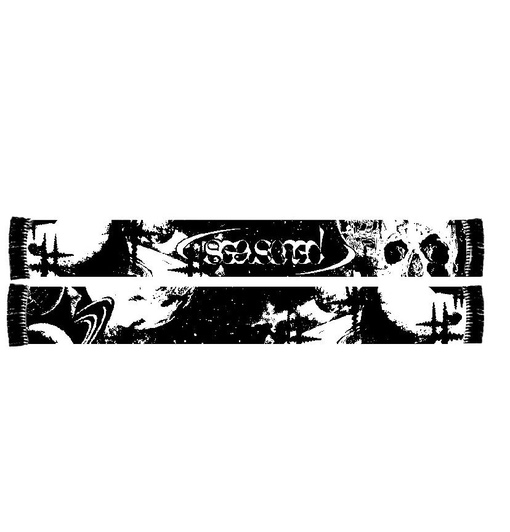

Autumn Collection
"Осенняя коллекция от AKOS BRAND`z — это вдохновение природой, пленительные оттенки сезона и комфорт, который подарит вам уют в холодные дни. Наши дизайнеры воплотили в жизнь симбиоз стиля и функциональности, представив вам одежду, которая призвана подчеркнуть вашу индивидуальность.
Смешение естественных тонов осени с инновационными тканями и силуэтами придает коллекции свежий и современный вид. Вы найдете у нас утепленные пальто, мягкие свитера и шарфы, а также стильные аксессуары, чтобы создать собственный уникальный образ.
AKOS BRAND`z приглашает вас окунуться в атмосферу уюта и стиля этой осенью, выразив себя через нашу одежду. Добро пожаловать в мир осенней моды, где каждая вещь — это искусство и комфорт в одном флаконе."
Шарф "Seasoned"
Price: $23.99
Описание: Тёплый и отличный по качеству шарф.